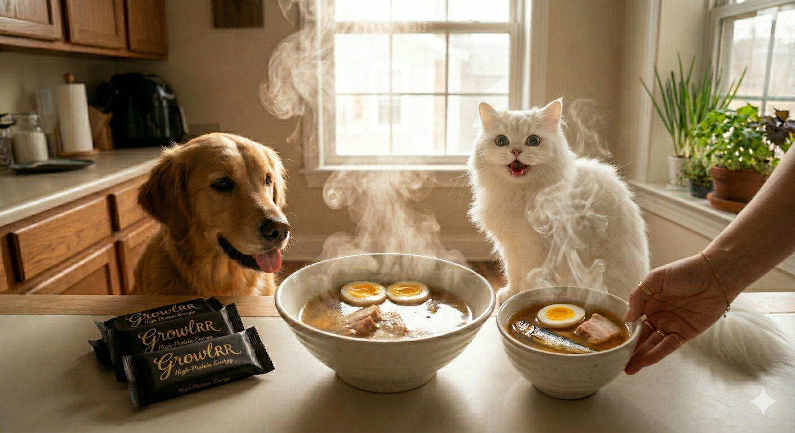

Growlrr Foods is a precision pet nutrition company. Our mission is to eliminate the gap between commercially available pet food and what a carnivore’s biology actually requires — without requiring owners to source impractical ingredients.

Supermarket muscle meat is exsanguinated, organ-stripped, and bone-free. Drained blood removes heme iron; absent organs remove Vit A and B12; missing bones remove the Ca:P ratio anchor.
Grocery meat is a foundation, not a finished diet. It is structurally incomplete for a carnivore without a precisely calibrated bridge.
While super-rich in nutrients, grocery store organs vary significantly in nutrient density due to animal age and farming practices. Improper handling or guessing quantities leads to severe chronic imbalances.
NRC Blocks remove this volatility via standardized, calibrated Bovine and Chicken liver matrices.
The Protocol leverages modern Urban Convenience to break from industrial processed pet foods. Owners source their own quality grocery meats from Quick Delivery Apps or local stores, while NRC Blocks provide the ancestral balance.
Many land based diets are deficient in Trace but essential minerals like Iodine. Vitamin B12 is found only in animal based diets.
High Heat processing of kibble or retort cans destroy fragile B-Vitamins. Our process ensures all these reach your pet's diet everyday in appropriate doses.
Owners are instructed to steam meat fresh daily in their kitchens to eliminate pathogens without worrying about nutrient loss.
Every aspect of the protocol is designed to exceed NRC 2006 requirements. Modeling assumes standard thermal processing in household conditions.
Felines require specific nutrients available only in animal tissue: Taurine, Arachidonic Acid, and Pre-formed Vit A. They cannot synthesize these from plant matter.
Canines are primarily meat-eaters but possess limited tools for plant nutrient utilization. They thrive only on high-protein, animal-centric nutritional matrices.
Launch the stochastic stress test to build a dynamically scaled, 110% NRC compliant recipe mapped directly to your pet's metabolic weight and species.
Precision values calculated per 24-hour metabolic cycle.
| Component | Scaling Basis | Weight/Qty | Kcal Delta |
|---|
Variety is the essence of life. As obligate and facultative carnivores, our subjects are primed to seek variety for nutrition, satiety, and joy. We provide a framework where this is not unbound.
Optional swaps are restricted to 1-2x per week. When flex is not necessary, the baseline is sufficient to meet 100% of needs.
Muscle meat rich in CoQ10 and bioavailable taurine. Primed for satiety and cardiac health.
Connective tissue muscle. Provides proline and hydroxyproline for joint cartilage.
Whole fish, pressure cooked for 20 minutes to soften bones. Authentic marine DHA/EPA. No river fish.
NRC standards utilize a $0.75$ power law developed for active lab dogs. This model fails inter-species scaling from 2kg–60kg, causing a clinical divergence in energy requirements.
Commercial Trap: $0.75$ power law and 1.4x MER factor over-fuel large dogs in tropical conditions, precipitating chronic obesity.
Nutrient Starvation: Conversely, small "rocket" dogs suffer under linear models that underestimate the metabolic intensity of their surface-to-mass ratio.
| Score | Condition | Cat est. kcal | Dog est. kcal | Clinical Action Plan |
|---|---|---|---|---|
| 3/9 | Underweight | ~220 | ~850 | Increase goat/mutton +10%. Recheck in 2 weeks. |
| 5/9 | Ideal ★ | ~250 | ~1,000 | Optimal. Maintain current grocery weights. |
| 7/9 | Overweight | ~210 | ~800 | Reduce Protein Pool by 15%, increase satiety hydration. |
Lactate Gluconate, Citrate Malate, and Bone MCHA (CatCore) / Eggshell Powder (DogCore). Locks Ca:P at species-appropriate levels. Eggshell delivers near-zero P for high-Ca dog Ca:P correction without phosphorus loading.
Bovine Liver (B12, Cu, Vit A) and Chicken Liver (B2, B5, B9, Selenium) ensure micronutrients are provided in natural context.
Highest manganese source in companion nutrition. Chitin serves as a unique prebiotic fiber for immunomodulatory support.
| Component | CatCore %/mg | DogCore %/mg |
|---|